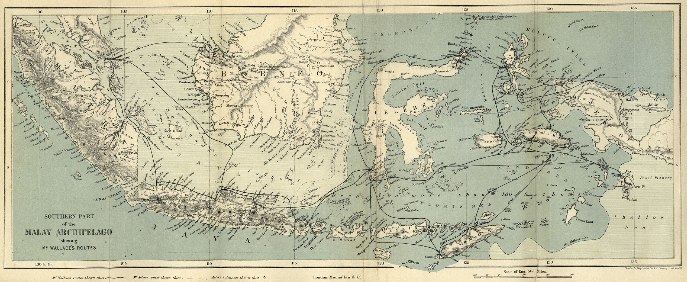
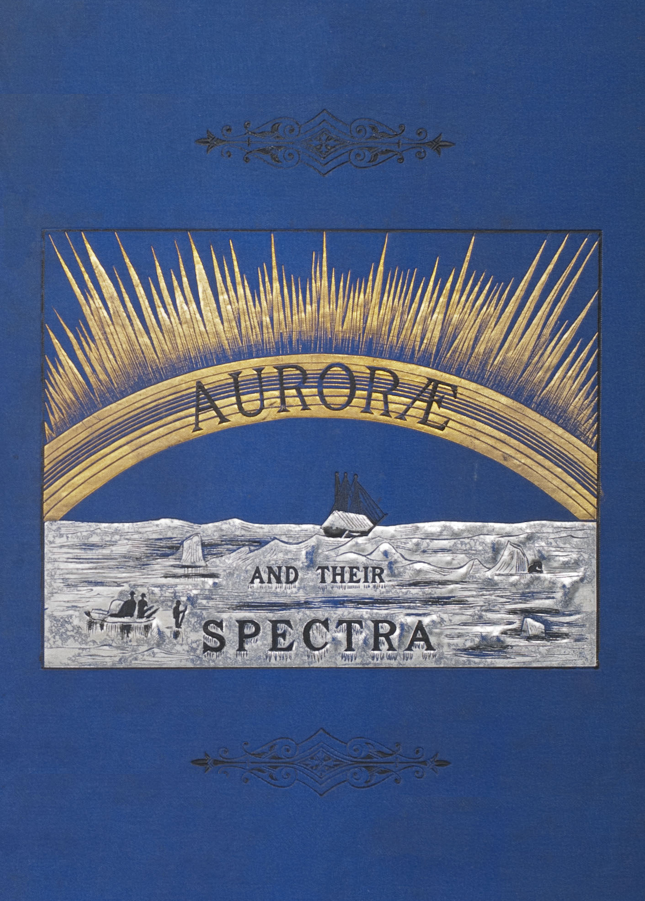

Demos
Live demonstrations of paged-with-floats: CSS page floats, footnotes, multi-column pagination, running headers and page numbers — paginated entirely in the browser.
Editable playground

The Malay Archipelago
Two-column flow with page floats
(float-reference: page; float: top) spanning both
columns, footnotes at the page bottom, running chapter heads.
Edit the HTML source in the textarea, then hit “Render pages”
or “Download PDF”.
Whole books in two to four columns
Alice’s Adventures in Wonderland
Lewis Carroll, two columns.
2 columnsFrankenstein
Mary Wollstonecraft Shelley, three columns.
3 columnsMoby-Dick
Herman Melville, four columns.
4 columnsOrnamented specimen book

Auroræ — Their Characters and Spectra
J. Rand Capron’s 1886 aurora monograph, a Victorian sample book with gilt cover, plates, initials and ornaments, paginated through the previewer API.
Previewer APIPrint & PDF export
Measurement benchmark
Stress-test the text-breaking backends and export the result as a real vector PDF. The print/PDF APIs are documented in the README under “Print & PDF export”.
Print & PDFFull Project Gutenberg texts (public domain). Running
headers show the current chapter via string-set; footers
carry page numbers. Each book page offers a one-click PDF download.